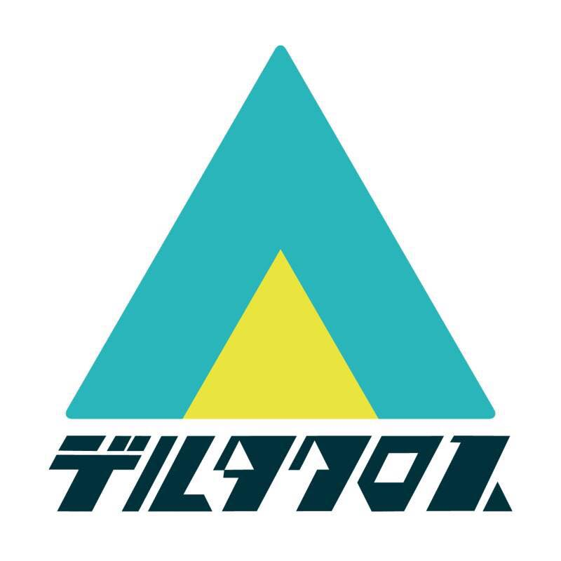

Community
TechLogicsはエンジニア、デザイナー同士が繋がるための場所
代表は株式会社Far Connection CEO&CTOのいっちマン
TechLogics

学生デザイナー・エンジニア・プランナーが集い新たな価値を生み出す場所
Deltacross Kyoto
Kono Junya
Web Developer
TechLogicsはエンジニア、デザイナー同士が繋がるための場所
代表は株式会社Far Connection CEO&CTOのいっちマン
TechLogics
学生デザイナー・エンジニア・プランナーが集い新たな価値を生み出す場所
Deltacross Kyoto